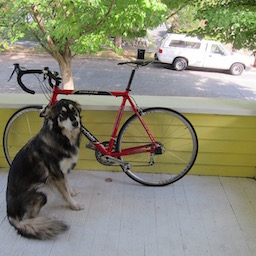
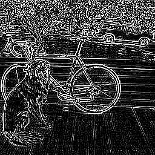
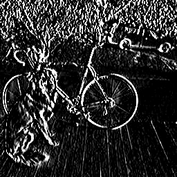
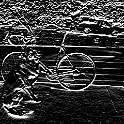
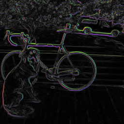

Say we want to run our neural networks on image data. We know that in image processing, feature extraction is very important to make machine learning models work well.
One standard technique for extracting features is the histogram of oriented gradients (HOG) method. You don’t have to worry too much about how HOG works, it’s basically just looking at patches in the input image and measuring which way the gradients (edges) face in those patches. The important part is the dimensions of HOG features. HOG features produce a 36-element vector for each \(8 \x 8\) patch in the input.
Say we want to learn feature extraction using neural networks instead. If we want to mimic HOG features our network might look like:
Since fully connected layers are fully connected there are 7.2 billion connections between the input and hidden layer!
During feature extraction, our network is looking at the entire image every time it computes a single feature. However, HOG features (and most image features) are meant to capture local information, like what edges are present nearby. We don’t need to look at the whole image for this.
For most feature extraction on images we can impose the assumption that pixels that are far apart are statistically independent. This means we only need to look at smaller, local regions when performing feature extraction.
Convolutions are a powerful tool for local feature extraction in a signal. The convolution operation takes two functions and slides one along the other, performing a dot product of their intersection to form an output signal. Note: in computer vision we talk about convolutions but in the signal processing domain what we’re actually talking about is a cross-correlation. I’m not going to try to correct a decade of mistaken terminology in this class so I’m just going to call it a convolution idk sorry…
Anyway, it’s nice to start with a 1-D example. We’ll be talking about discrete functions which we can just think of as vectors. We’ll define the convolution operator as follows:
\[(m * f)(x) = m_{[x-1, x+1]} \cdot f\]Take discrete functions \(m\) and \(f\). To convolve these filters we simply slide the filter \(f\) along input signal (or function) \(m\) and take weighted sums, storing the result in a new vector.
So the output is the vector:
\[m*f = [0 , 0 , 2 , -4 , 2 , 0 , 0 , -5 , 10 , -5 , 0 , 5 , -10]\]This particular filter, \(f = [-1, 2, -1]\), is a high-pass filter. It doesn’t respond to slow changes in the function but does respond to fast changes. The results is an output signal centered around zero that oscillates up and down when the input signal quickly moves up or down.
Notice that our input signal \(m\) has 15 elements but our output \(m*f\) only has 13 elements. We can’t apply the filter outside the bounds of our original function \(m\) so our output signal \(m*f\) with have size \(\vert m\vert - \lfloor\frac{\vert f \vert}{2}\rfloor\), in this case \(15 - 2 = 13\). Often it is helpful to have your input and output be the same size (like when processing data with neural networks!) so you may want to pad your input with data to make the output end up the same size. Consider using:
Most of the time zero-padding is a good option but you can try other versions too.
Another useful filter to know is \(f = [0.\overline{3}, 0.\overline{3}, 0.\overline{3}]\) or \(f = [0.2, 0.2, 0.2, 0.2, 0.2]\) or in general \(f = \frac{1}{n}[1,1,1,\dots,1]\). This is a low-pass filter or blurring filter, the output at every pixel is an average of a local window in the input signal.
Convolutional filters are powerful feature extractors in 2D. Here’s an example of high-pass and low-pass filters (or box filter) in two dimensions:
\[\text{High-Pass Filter} = \begin{bmatrix} -1 & -1 & -1 \\ -1 & 8 & -1 \\ -1 & -1 & -1 \\ \end{bmatrix}\] \[\text{Low-Pass "Box" Filter} = \frac{1}{9}\begin{bmatrix} 1 & 1 & 1 \\ 1 & 1 & 1 \\ 1 & 1 & 1 \\ \end{bmatrix}\] \(*\begin{bmatrix} -1 & -1 & -1 \\ -1 & 8 & -1 \\ -1 & -1 & -1 \\ \end{bmatrix} =\) 
\(* \frac{1}{9}\begin{bmatrix} 1 & 1 & 1 \\ 1 & 1 & 1 \\ 1 & 1 & 1 \\ \end{bmatrix} =\)
Sobel filters are convolutional filters designed to take the (approximate) derivative of an image in the x and y dimension.
\[G_x = \begin{bmatrix} -1 & 0 & 1 \\ -2 & 0 & 2 \\ -1 & 0 & 1 \\ \end{bmatrix} =\] \[G_y = \begin{bmatrix} -1 & -2 & -1 \\ 0 & 0 & 0 \\ 1 & 2 & 1 \\ \end{bmatrix} =\]Using these filters we can do things like find high rates of change in the x-dimension (vertical lines), y-dimension (horizontal lines), or calculate the magnitude and direction of all gradients (lines) in the image.
\(* \begin{bmatrix} -1 & 0 & 1 \\ -2 & 0 & 2 \\ -1 & 0 & 1 \\ \end{bmatrix} =\) 
\(* \begin{bmatrix} -1 & -2 & -1 \\ 0 & 0 & 0 \\ 1 & 2 & 1 \\ \end{bmatrix} =\) 
\(\arctan(\frac{dy}{dx}) =\)
Hopefully you are now convinced that convolutional filters are effective at extracting useful information from local patches in signal data (such as images). Though they are powerful feature extractors, they are relatively simple, we are just doing a weighted sum of the input with a filter.
Convolutions, especially filters like sobel filters, were commonly used as a first step in feature extraction before deep neural networks. The features they found would be aggregated in local areas to produce descriptors like HOG features.
But now we want to bake feature extraction into our neural network. Fully connected layers were too dense but convolutions are spare operations (each pixel in the output is only connected to a local neighborhood in the input) and are computationally fairly cheap (like connected layers we are just doing a weighted sum to compute convolutions).
So instead of using pre-defined convolutional filters we can implement neural network layers that perform convolution operations. The weights in these layers can be updated via error backpropagation so we learn filters that work well for the particular task.
Parameters:
Each filter processes the input image or feature map and produces a single channel for the output feature map. More filters mean the layer can specialize and extract more specific features. However it also means the layer take longer to process.
In general you need fewer features in the early layers because there aren’t very many interesting features to look for. For instance in the first layer there are only so many orientations of edges and color blobs to look for. Adding more filters can just lead to redundancy without being productive.
Later layers tend to have more filters as the spatial dimensions of the image shrinks. There’s less information in the spatial dimension but more semantic information and more channels to process and look for patterns in.
Larger filters can process more information in the spatial dimensions but take longer to process. Smaller filters are faster. In general filters are square and usually have odd parity in size. Only a few filters are commonly used although there is room to explore other options. The common ones are:
Typically convolutional filters are applied at every pixel location.